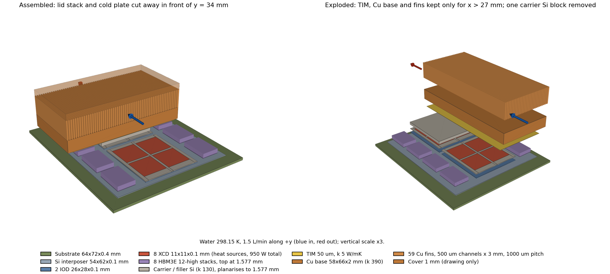
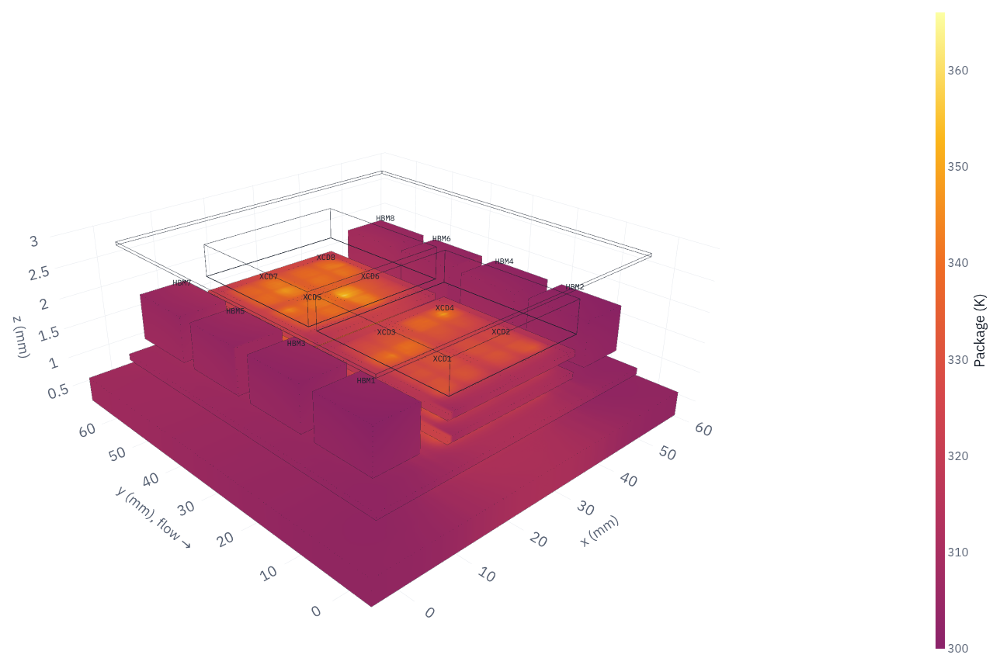

Liquid cold plate on an accelerator package: water flow, fins and 20 µm hot spots in one model
Water flow, copper fins and a 950 W package in one model, from coolant to 20 µm hot spot in 48 minutes on one CPU server.
A cold plate is usually entered as a fixed heat-transfer coefficient. On a 950 W package that hides where the cooling actually comes from: the water warms as it flows, the channels over the compute dies carry most of the heat, and the downstream dies see warmer water. ThermStack-Flow solves the water flow in the channels together with the heat in the copper fins and the package. The plate result then feeds the package model, which resolves the hot spots to 20 µm with APR. The case is an MI350-inspired package with a synthetic power map under a generic copper mini-channel cold plate; it is not AMD data and not a specific product. The downstream compute dies run 13–30 K hotter than the upstream ones, the hottest reaches 365.9 K, and the whole chain from coolant to hot spot runs in 48 minutes on one CPU server.

An MI350-inspired package under a copper mini-channel plate
The package follows the public outline of an MI350-class accelerator; the power map and the cold plate are generic and built for this study.
Eight 11 × 11 mm compute dies (XCD) are bonded on two 26 × 28 mm I/O dies, beside eight 12-high HBM3E stacks, on a 54 × 62 mm silicon interposer and a 64 × 72 mm organic substrate. Carrier silicon brings the top flat at 1.577 mm. The package dissipates 950 W in 114 synthetic power blocks, mostly in the compute dies. A 50 µm interface material (5 W/m·K) joins it to a 58 × 66 × 2 mm copper base with 59 fins. Between the fins are 58 water channels, 0.5 mm wide and 3 mm tall at 1 mm pitch. Water enters at 298.15 K and 1.5 L/min, with temperature-dependent viscosity and conductivity; the inlet Reynolds number is about 276, so the flow is laminar. The sides, the cover and the substrate underside are adiabatic: all the heat leaves in the water.

Plate by flow, package by resolution on demand
The work is split where the physics changes. ThermStack-Flow solves the conjugate problem first: the laminar water flow in all 58 channels, the heat in the water, the copper and the whole package, in one 1.48 M-cell model. The flow-resolved plate cooling then carries over to the package model, where ThermStack APR (WP-104) adds resolution on the compute dies, down to 20 µm at the hottest spots. A single 380 µm grid averages over the hot spots and reads about 20 K low; only 20 µm resolution captures them.
The water warms unevenly, and the hot dies are downstream
On average the water warms by 9.1 K (950 W at 1.5 L/min), but not evenly. The centre channels, which sit over the compute dies, leave at up to 314.2 K; the edge channels, over the HBM stacks and the substrate overhang, leave at 301.2 K. The local heat-transfer coefficient on the plate base ranges from 15.7 to 39.8 kW/m²K. The four compute dies on the second I/O die (y 32–60 mm) see water that the first four have already warmed, and run 13–30 K hotter. Most of the temperature drop is below the water: 37 K from the hottest compute-die spot through the die, carrier silicon and interface layer to the fin root, and about 16 K from the fin root to the water.

The hottest die at 20 µm
The hottest spot is on XCD_6, a downstream compute die. The 20 µm window over it (2.8 × 2.7 mm) gives a peak of 365.9 K, 67.7 K above the inlet water. APR's built-in convergence check bounds the converged peak at 366.88 ± 1.24 K; the 20 µm peak lies inside that band. Using the flow-resolved plate instead of a compact plate model lowers the hottest dies by 2.1–2.4 K (3.3 % of the rise) and raises the upstream dies by 0.9 K; the compact model also predicts a 50 % higher pressure drop.

Each step, with wall time and memory
| Run | Peak | Pressure drop | Outlet water | Size | Wall time | Cores | Peak memory |
|---|---|---|---|---|---|---|---|
| Compact plate model, single 380 µm grid | 344.41 K | 803 Pa | 300.9–314.5 K | 1.02 M nodes | 5.4 min | 16 workers | 4.9 GB |
| ThermStack-Flow, plate + water + package | 345.51 K | 536 Pa | 301.2–314.2 K | 1.48 M cells | 27.0 min | 16 threads | 19.3 GB |
| APR 20 µm, ThermStack-Flow plate maps | 365.89 K | – | – | adaptive, to 20 µm | 21.4 min | 8.4 average | 27.7 GB |
| APR 20 µm, compact plate maps | 368.20 K | – | – | adaptive, to 20 µm | 28.5 min | 7.2 average | 27.8 GB |
The two single-grid peaks (344–346 K) are the 380 µm cell averages, not the hot-spot temperature; the APR rows are the resolved peaks.
MI350-inspired package with a synthetic 950 W power map; not AMD data. The cold plate is a generic copper mini-channel design, not a specific product. Steady state; water 298.15 K at 1.5 L/min, laminar, with temperature-dependent viscosity and conductivity; adiabatic sides, cover and substrate underside. Temperatures are absolute; rises are above the 298.15 K inlet. Cores are threads or workers on one CPU server; “average” is CPU time over wall time. AMD, Instinct and MI350 are trademarks of Advanced Micro Devices, Inc. NoveetyAI is not affiliated with, endorsed by, or sponsored by AMD, and this material was not produced in cooperation with AMD.